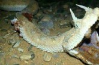

بين الحين والآخر تضج مواقع التواصل الإجتماعي بأخبار لا مصداقية لها نقلت عن مواقع الكترونية هنا وهناك ونشرتها مواقع هناك وهنالك، على قاعدة صحافة السرعة اللاواعية بإيقاع الـ copy-paste. فبعد أخبار نشرت منذ وقت عن طيور مجهّزة بآلات تنصّت إسرائيلية وهي في الحقيقة أجهزة تعقب لمسارات الطيور هدفها معرفة طرق الهجرة، والتي نقلها حينها إعلام عصر السرعة ليحدث بلبلة في البلد دون إي شعور بالمسؤولية، تكرر المشهد اليوم مع نقل بعض وسائل الإعلام لخبر مفاده " الجيش اللبناني يقتل أفعى في طرابلس عمرها 3000 عام". مصحوبا بصورة لأفعى مقرنة ليحدث بلبلة أخرى دون التفكير في صحة الخبر او عدمه، في عقلية تشير الى تشريع الأهداف التجارية بعيدا عن الأمانة المهنية لزيادة عدد القراء، أو الإنفعال الفارغ الذي لا يمت الى المعرفة والبحث بصلة. " صيد " التي تابعت الخبر المشبوه عبر مدير قسم الصيد البري فيها ماهر أسطه، تؤكد لقرائها سذاجة ما نشر وتشير الى ان هذا النوع من الافاعي والذي يسمى Horned Viper لا يوجد مطلقا في لبنان إنما في صحاري شبه الجزيرة العربية وخصوصا السعودية، وهي أفاعي سامة من سلالة Cerates وتقوم الأفعى المقرنة بنشاط ليلي وتدفن نفسها بالرمال من وقت للآخر عبر الحركة الإهتزازية وتبقي عينيها خارج التراب لمراقبة فرائسها،ولا يتجاوز طولها 85سم، لكنها في الصور تبدو أكبر من حجمها الطبيعي بسبب سماكة جسمها ورأسها العريض، وتعيش حتى 20 سنة فقط. لم تكن هذه الأفعى في طرابلس مطلقا، والجيش اللبناني لم يقتل أفعى مقرنة ويدهسها بسيارة الهامر، وقد كان من الأجدى قبل نشر هذا الخبر الاتصال بالجيش لمعرفة حقيقة الأمر قبل التسرع في نشر أخبار كاذبة. وحقيقة هذه الصورة أنها نشرت منذ أكثر من 15 يوما على الحاسب الشخصي في plus.google.com لسعودي يدعى خالد الوافي الذي قال في تعليقه على الصورة : " تم إعدام اكبر أفعى في وادي خورة شبوة بالرصاص حتى الموت ". لكن هناك معلومة أخرى بحاجة الى توثيق تقول بأن صورة هذه الأفعى تعود لأكثر من سنة وقد قتلت في مزرعة ماعز في السعودية . الأسئلة التي تطرح نفسها اليوم بمرارة، كم من المرات ستستعمل صورمشابهة وأخبار ملفقة دون التأكد من صحتها؟ وما هو اسم البيطري الخبير الكبير المثقف الذي أفاد إن عمر الأفعى اكثر من 3000 سنة؟ وكيف سكنت أفعى بهذا العمر مدينة طرابلس دون أن يعلم بها او يراها أحد من قبل؟ الا يكفي زج أخبار الرعب في كل شاردة وواردة في أخبارنا وحياتنا؟ أهكذا يكون الإستهتار بعقل القارئ اللبناني ؟ أي نوع من الإعلام سيقود وجهة الوطن، والى أين ؟؟ أسئلة برسم الجميع تحتاج الى عقل .. يا أصحاب العقول .
من كل وادي خبر


{kind=link}